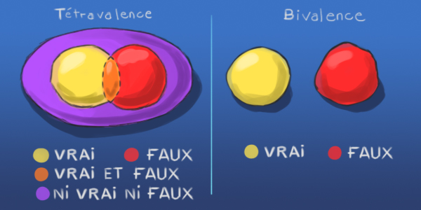

Salut à toi ami capitaliste qui a pris le temps de me lire et de me répondre !
Mes amis et ma famille me renvoient leur réalité : le mode binaire. Je leur fais un wazari en leur proposant le mode quaternaire et j'enchaîne par un "J'accuse Patrick Cohen" !
La réponse de mon ami Thibault, ingénieur mais pas que, me rappelant notre voyage initiatique au Maroc me plaît pour commencer ce billet :
La réponse de mon ami Olivier, touche à tout mais pas que, me déprime ! Des chercheurs nous montrent que la majorité des individus raisonnent en mode binaire oui/non, Macron/Le Pen. Ce qui conforte la réponse de mon oncle Christian, gérant mais pas que, qui m'invite à m'engager politiquement et pour simplifier me renvoie à la dichotomie optimiste/pessimiste, verre vide ou plein, le ying et le yang. Les mathématiques ont dépassées la logique binaire 0 ou 1 par la logique quaternaire : 0 et 1, ni 0 ni 1.

Au-delà de la pensée binaire.
Je suis désolé que mon message ne soit pas perçu comme j'aimerai qu'il le soit : notre démocratie est en feu et je veux pisser sur les 2 flammes que sont en même temps l'extrême droite et l'utra-libéralisme car tout le monde connaît les reprises de feu spontanées après un incendie et tout le monde sait qu'après la victoire de Macron les pompiers rentreront à la caserne et les pyromanes iront se coucher en faisant de beaux rêves assis confortablement sur notre avis et notre souveraineté ... nous devons rester sur zone pour maîtriser l'incendie ! Allo chef ? Ici brigadier Hugo, incendie maîtrisé, on reste sur zone cette nuit, on va passer la nuit à la belle étoile et pisser sur chaque reprise de feu entre 2 chansons. Terminé. Attends instruction. OK Brigadier : Super Merci et abusez pas du Pastis, utilisez les lances à eau si ça repart. Bonne nuit et à demain.
Mon raisonnement purement mathématique, rationnel, logique, capitaliste, de dire que si le nombre de votes blancs dépasse le premier candidat et si les mots ont un sens, l'expression du peuple sera : nous voulons au minimum du minimum une nouvelle élection et la consititution d'états généraux, qui me semblent indispensable. Nous sommes dans un cas qui n'a jamais été prévu par ceux qui ont écrit la constitution, qui n'auraient pas pu imaginer un instant à leur époque que deux extrêmes s'affrontent : l'extrême-droite et l'ultra-libéralisme. Le peuple français est ainsi fait qu'il met sa constitution à rude épreuve, bien aidé par la mondialisation. Merde : tout le monde dit que l'heure est grave ! faîtes un pas de côté, changez de paradigme, adoptez la logique quaternaire !
J'ai envoyé le message suivant à des journalistes de radio, si vous êtes d'accord avec ce que je dis, partagez pour faire entendre la voie du milieu que Bouddha nous a laissé en héritage :
Mon grand père est un héro de la résistance, je dois faire quoi ? prendre le maquis ? Avant ça je vous supplie d'aller vous prostituer au service politique de votre radio/télévision/journal pour qu'ils sortent un expert sur une loi européenne qui dirait que sur le vote blanc la loi européenne prend le dessus et que donc on va gagner !!! (à lire en mode Macron survolté). Ah bah non c'est vrai, les médias privés ne peuvent pas dire ça, ils vivent du marketing et les médias publics épousent et font le toilettage des politiques. Le tout en se donnant bonne conscience avec des "chroniqueurs" qui le vivent de plus en plus mal : Nicole Ferroni je t'aime !
Révolte-toi : porte plainte pour harcèlement moral contre la rédaction de France Inter qui empêche que l'association de l'idée Vote Blanc = États Généraux si il est majoritaire ne puisse pas être prononcée à voix haute à l'antenne ! C'est au prix de la lâcheté des journalistes de notre pays que la troisième voie n'est pas posée sur la table. Profession qui possède contrairement aux autres une clause de conscience, conscience avec laquelle il devront s'arranger le jour où leurs enfants martyrisés par l'un ou l'autre des choix que l'on nous propose les interrogeront !
Lisez mon pamphlet : J'accuse Patrick "Magic" Cohen
Nous n'avons besoin de rien d'autre que notre déclaration universelle des droits de l'être humain et des citoyens organisés en société pour descendre paisiblement et calmement dans la rue, se rassembler devant les mairies, faire des groupes qui font des propositions qui sont soumis au vote des autres. Une fois un consensus trouvé, les messagers d'une ville se retrouvent pour faire la synthèse avec les messagers des autres villes, si des problèmes surviennent, les messagers retournent dans leur ville etc etc etc ça s'appelle des états généraux : il faut juste de pas avoir peur de parler avec l'autre.
Si un génie sortait de sa boîte et me disait Hugo : tu peux faire voter une seule loi ! Je demanderais au génie de changer le programme éducatif pour que pendant toute leur scolarité, les programmes d'histoire géographie soient remplacés par l'étude de toutes les religions et philosophie et courants de pensée. Par ce que l'on apprend beaucoup plus que juste des faits historiques et la hauteur des montagnes, en prenant cette grille de lecture du monde : on dépasse la peur primitive de l'autre qui vous empêche peut-être de vouloir descendre dans la rue ?
Lisez ce texte de Jiddu Krishnamurti changer l'éducation pour comprendre quels peuvent être nos bloquages et écouter notre intuition.

Le Pape François n'appelle a voter ni pour l'un ni pour l'autre des candidats qu'il estime ne pas connaître et ajoute qu'il ne comprends pas la politique de notre pays ! (Article Europe 1). Cela devrait inciter les catholiques, a prêter une oreille encore plus attentive à mon propos.
Mes années d'études des religions et philosophies m'ont amené à me choisir la maxime suivante comme principe de vie :
Au début je pris pour maître mon Maître
Au milieu je pris pour maître les Écritures
A la fin je pris pour maître mon Esprit
Nous n'avons qu'une phrase à faire prononcer à Mme Le Pen et Mr Macron : "Si le vote blanc l'emporte, je partirai en exil, sans fleurs ni trompettes".
Si certains d'entre vous ont dans leur entourage des personnes qui pourraient elles-même dans leur entourage connaître quelqu'un qui travaille à la radio, à la télé, dans la presse écrite et qui aurait le courage de posez aux deux finalistes la question :
Que ferez-vous si le vote blanc l'emporte ?
Posez vous la question : est-ce que je veux l'un ou l'autre ? Si vous répondez non à cette question posez vous la suivante : existe t'il une solution sachant qu'il reste une semaine avant les élections. Je répond oui ! Donnez-vous les moyens que cette question soit posée :
Que ferez-vous si le vote blanc l'emporte ?
Notre drapeau national comporte trois couleurs et le blanc qui est « la teinte obtenue en mélangeant la lumière de toutes les couleurs » est au milieu ! je vous demande de poser la question à tous les gens que vous rencontrez cette semaine : que feras-tu si le vote blanc l'emporte ? Tu descendras dans la rue demander des état généraux où tu te baricaderas chez toi ou tu prépareras tes valises ? Chacun de nous doit répondre à la question :
Que ferez-vous si le vote blanc l'emporte ?

Rédigé le Dimanche 30 avril 2017